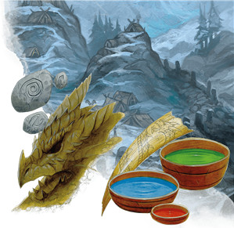

Le barbare D&D 5 pour les nuls
Vous êtes un barbare, un combattant courroucé qui compte sur sa force brute plus que tout. Votre fureur tempétueuse aiguise vos sens et vous rend capable d'exploits surhumains. Vous pouvez libérer votre puissance sur vos ennemis (style offensif), harceler vos ennemis (style défensif) ou protéger vos alliés (rôle de protecteur).
Vos nombreuses capacités défensives vous donnent l'opportunité de jouer l'un des personnages les plus endurants de D&D, tout en semant la peur dans le cœur de vos ennemis grâce à votre puissance offensive incroyable. Votre choix de sous-classe vous donne également une grande variété de choix thématiques qui font que, même si vous avez choisi de jouer un barbare pour ses prouesses au combat et que vous ne vous souciez pas trop de l'interaction sociale, vos capacités de classe vous donneront la possibilité de glisser facilement dans la peau de votre personnage.
Créer votre barbare
Sans aller jusqu'à parler d'optimisation, la première étape pour bien jouer votre classe est de construire votre personnage efficacement.
- Choisissez votre race. N'importe laquelle peut faire un bon barbare, mais vous devriez choisir une race qui améliore vos valeurs de Constitution ou de Force. Les demi-orcs font d'excellents barbares, car leurs bonus de +2 en Force et de +1 en Constitution jouent directement sur les forces du barbare. Les traits raciaux des demi-orcs comme Endurance implacable et Attaques sauvages sont aussi en harmonie avec vos objectifs de faire beaucoup de dégâts et de ne pas mourir. Les nains des montagnes sont une très bonne option également, car ils gagnent un bonus de +2 en Force et en Constitution, comme les humains. Si votre MD permet des dons, Maître des armes à deux mains, Spécialiste des boucliers ou Sentinelle au niveau 1 vous donne un énorme coup de pouce en termes de puissance et de flexibilité.
- Choisissez la classe de barbare (évidemment !).
- Choisissez des compétences qui correspondent à ce que vous voulez que soit votre personnage. Les compétences qui jouent sur vos points forts sont utiles, mais pensez aussi à compenser certaines de vos faiblesses afin d'obtenir un personnage un peu plus équilibré.
- Pensez au rôle que vous voulez remplir au sein du groupe (Offensif, Défensif ou Protecteur). Nous verrons cela plus en détail ci-dessous, mais pour l'instant, sachez qu'un personnage offensif se concentre sur les dégâts infligés, un défensif se concentre sur le fait de rester en vie, et un protecteur se concentre sur la protection de ses alliés.
- Choisissez vos valeurs de caractéristique selon le rôle que vous souhaitez jouer. Si vous voulez jouer offensif, mettez votre valeur de caractéristique la plus élevée en Force, et votre deuxième plus forte en Constitution. Si par contre vous voulez jouer défensif ou protecteur, mettez votre valeur de caractéristique la plus élevée en Constitution, et votre deuxième plus forte en Force.
- Choisissez un historique qui colle avec le concept de votre personnage : un barbare qui a vécu comme un sauvageon toute sa vie est un personnage totalement différent de celui qui a vécu pendant de nombreuses années en tant que soldat, avant de faire défection.
- Pour votre équipement, choisissez :
- une hache à deux mains ou une épée deux mains
- deux hachettes
- un sac d'explorateur et quatre javelines
Quel type de barbare ?
En tant que barbare, on peut s'attendre à ce que vous ayez le rôle du combattant féroce qui déchire ses ennemis comme du papier, mais il y a en réalité d'autres options à votre disposition pour avoir un rôle autre qu'offensif. Grâce à votre énorme réserve de points de vie et à vos résistances aux dégâts, vous pouvez être un puissant héros défensif, capable de résister à vos ennemis, d'interrompre les rituels ou de voler des artefacts magiques vitaux. Entre l'attaque et la défense, vous pouvez aussi être un très bon protecteur, forçant vos ennemis à vous combattre à la place de vos alliés en leur faisant face.
Votre rôle dans le groupe ne se cristallisera probablement pas avant au moins le niveau 3, lorsque vous choisissez votre Voie primitive (aussi appelée sous-classe). Pensez dès maintenant à celle que vous allez choisir, afin de pouvoir planifier le thème et la mécanique de votre personnage à l'avance.
Offensif
En tant que barbare offensif, vous vous concentrez sur le fait de sauter directement dans la mêlée et de tuer les ennemis en toute impunité, sachant que vos points de vie et vos résistances aux dégâts vous garderont en vie. La sous-classe la plus offensive est la voie du berserker.
À partir du niveau 5, vous pouvez également penser à vous multiclasser en guerrier durant 3 niveaux pour améliorer vos dégâts bruts. Choisissez le style de combat Arme à deux mains et l'archétype champion pour obtenir la capacité Critique amélioré, qui se combine très bien avec la capacité Critique brutal du barbare (et potentiellement aussi avec le trait Attaques sauvages du demi-orc).
Défensif
En tant que barbare défensif, votre travail consiste à intercepter les ennemis et à pouvoir rester le plus longtemps possible dans le combat en échangeant un peu de puissance offensive contre une capacité de survie accrue. Les sous-classes les plus défensives sont la voie du guerrier totem et la voie du héraut des tempêtes (Xanathar’s Guide to Everything).
Protecteur
Le protecteur est un rôle particulier qui mélange attaque et défense. Votre but est de forcer les ennemis à vous attaquer plutôt que vos compagnons les plus faibles. Cela signifie que vous devez représenter une véritable menace aux yeux de vos ennemis (ou du moins être suffisamment gênant) pour les forcer à vous attaquer, tout en ayant suffisamment de puissance défensive pour survivre à leurs attaques. La meilleure sous-classe pour le protecteur est la voie du guerrier totem.
Se battre comme un barbare
Durant les trois premiers niveaux, votre style de combat sera à peu près le même quel que soit le rôle que vous voulez jouer dans le groupe. Jouer un barbare est donc généralement assez simple à bas niveaux. Vous utiliserez votre Rage autant que possible en mêlée et infligerez beaucoup de dégâts.
Certains choix peuvent changer cela tout de même, comme par exemple si vous jouez un humain, car le choix du don peut définir votre le rôle dès le niveau 1. Certains dons sont plus ou moins puissants selon les défis auxquels votre MD vous fait faire face, mais certaines options sont bonnes en toutes circonstances :
-
Offensif. Choisissez le don Maître des armes à deux mains. Associé à Attaque téméraire, ce don peut faire s'envoler les dégâts que vous infligez.
-
Défensif. Choisissez le don Spécialiste des boucliers. En tant que barbare défensif, vous pouvez utiliser un bouclier et une arme à une main pour améliorer votre classe d'armure, et ce don vous aidera en à tirer le meilleur parti.
-
Protecteur. Choisissez le don Sentinelle, qui encourage les ennemis à vous attaquer car il les pénalise s'ils tentent de vous dépasser.
Au niveau 1, vous gagnez les capacités Rage et Défense sans armure. Vous utiliserez votre Rage de barbare tout au long de votre carrière d'aventurier car c'est surement votre capacité de classe la plus importante, et beaucoup de vos capacités de sous-classe lui confèrent des pouvoirs supplémentaires, en plus de sa liste initiale d'avantages qui est déjà impressionnante. N'oubliez pas d'ajouter le bonus de dégâts que vous obtenez en rage à vos jets de dégâts !
Défense sans armure semble très puissant et permet de vivre le fantasme classique du barbare à la poitrine nue style Conan, mais cela se résume essentiellement à vous donner une armure gratuite. En fait, votre puissance vient plutôt de votre incroyable réserve de points de vie, alors n'ayez pas peur de renoncer à cette capacité pour porter une armure magique si vous en avez besoin. Le principal avantage de Défense sans armure est que cela vous permet de sauter dans la bataille sans perdre de temps à enfiler une armure. Son utilité est donc situationnelle, mais peut être très utile si votre groupe est attaqué pendant votre sommeil.
Au niveau 2, vous gagnez les capacités Attaque téméraire et Sens du danger. Attaque téméraire est essentiel pour les barbares offensifs et les protecteurs. Les barbares offensifs accepteront volontiers l'inconvénient d'être plus faciles à toucher en échange d'un avantage sur leurs propres jets d'attaque, et propose un scénario gagnant-gagnant pour les protecteurs en leur permettant de faire de sérieux dégâts tout en devenant une cible plus attrayante pour leurs ennemis.
Sens du danger est puissant, mais situationnel. Son intérêt variera énormément selon le type de campagne dans laquelle vous jouez. Une campagne de dungeon-crawling avec beaucoup de pièges ou une campagne avec beaucoup de magiciens qui envoient des boules de feu ? Splendide. Une campagne avec beaucoup de créatures vénéneuses et d'esprits invisibles ? Beaucoup moins. Essayez donc juste de ne pas oublier cette capacité de niche lorsqu'elle peut vous servir.
Au niveau 3, vous pouvez choisir une sous-classe et incarner vraiment le rôle de votre personnage au sein de votre groupe d'aventuriers.
Offensif
Si vous avez choisi la voie du berserker, vous gagnez la capacité Frénésie, une amélioration directe de votre capacité de Rage, mais qui a l'inconvénient de vous épuiser à la fin. Si vous avez un clerc ou un druide qui peut se permettre d'apaiser cet épuisement en lançant restauration supérieure une fois que vous avez atteint 2 niveaux d'épuisement, utilisez Frénésie aussi souvent que vous voulez ! Si vous devez attendre un repos long pour restaurer votre épuisement, utilisez-la uniquement pour les combats les plus importants de la journée.
Défensif
Si vous avez choisi la voie du guerrier totem, vous avez à choisir parmi un large choix de pouvoirs lié à un esprit totem. Heureusement, le choix est assez clair au niveau 3. Le totem de l'ours vous offre une résistance à (presque) tous les types de dégâts. Cela augmente votre endurance pour les combats qui impliquent des créatures plus complexes que de simples faiseurs de dégâts de corps à corps, faisant de vous une menace crédible contre les dragons, lanceurs de sorts et autres sortes de créatures.
Si vous avez choisi la voie du héraut des tempêtes, votre capacité d'Aura de tempête propose des choix difficiles car ses options sont toutes à peu près égales en puissance, alors choisissez comme bon vous semble. Le désert vous rend plus efficace contre des essaims de petits ennemis, la mer vous rend plus efficace contre un seul ennemi puissant, et la toundra vous permet d'aider vos alliés tant qu'ils restent près de vous.
Protecteur
Si vous avez choisi la voie du guerrier totem, vous devez choisir entre trois puissants totems d'animaux. Le totem de l'ours est tout aussi puissant en protecteur qu'en défense, mais vous pouvez aussi choisir le totem du loup. Si le totem de l'ours fait de vous un défenseur durable, cela pourrait décourager les ennemis de vous attaquer car leurs attaques sont moins efficaces contre vous que contre vos alliés qui n'ont pas de résistance aux dégâts. En choisissant le totem du loup, vous donnez plutôt un avantage à vos alliés aux jets d'attaque contre les ennemis qui vous entourent lorsque vous êtes en rage, incitant l'ennemi à vous frapper fort et rapidement pour que vous tombiez inconscient le plus tôt possible.
Tous
Au niveau 4, vous gagnez une Amélioration de caractéristiques ou un don. Vous devriez soit augmenter votre Force ou votre Constitution de 2 points, soit choisir un don qui convient à votre rôle en combat. Ces dons sont listés plus haut dans la section Se battre comme un barbare.
Au niveau 5, vous gagnez une Attaque supplémentaire chaque fois que vous prenez l'action Attaquer, ce qui double efficacement vos dégâts. Vous gagnez également la capacité Déplacement rapide qui augmente votre vitesse de marche de 3 mètres si vous ne portez pas d'armure lourde. Ce n'est pas très excitant, mais une augmentation de sa vitesse de déplacement est toujours une bonne chose car cela permet d'entrer dans la mêlée plus rapidement, d'en sortir plus vite et de protéger ses alliés plus efficacement.
Personnaliser son barbare
Comme les autres, cette aide de jeu se concentre principalement sur la construction de votre personnage, en mettant l'accent sur la mécanique plus que sur le jeu de rôle ou l'interprétation. Mais s'il est vrai que les barbares sont l'une des classes de D&D les plus centrées sur le combat, vous ne devriez jamais ignorer les deux autres piliers du jeu : l'exploration et l'interaction sociale. Avoir une idée claire de qui est votre personnage rend le jeu plus plaisant autour de la table. Même si votre personnage a des motivations toutes simples (boire de la bière, coucher avec des femmes ou protéger ses amis), cela permet toujours de faire rire vos camarades et conduit fréquemment à des moments mémorables émouvants.
Sentez-vous libre de jouer un personnage atypique également. Un barbare intelligent et cultivé est un contre-pied amusant face à l'archétype brutal habituel. Même Conan, le barbare par excellence, possédait une grande habileté et gagnait autant de combats par la ruse que par la force des armes. N'ayez donc pas peur de jouer un barbare ; même les personnages les plus simples peuvent être amusants à jouer.
Maintenant, prenez votre hache à deux mains et préparez-vous à la rage !
Basé sur un article de James Haeck, traduit par blueace